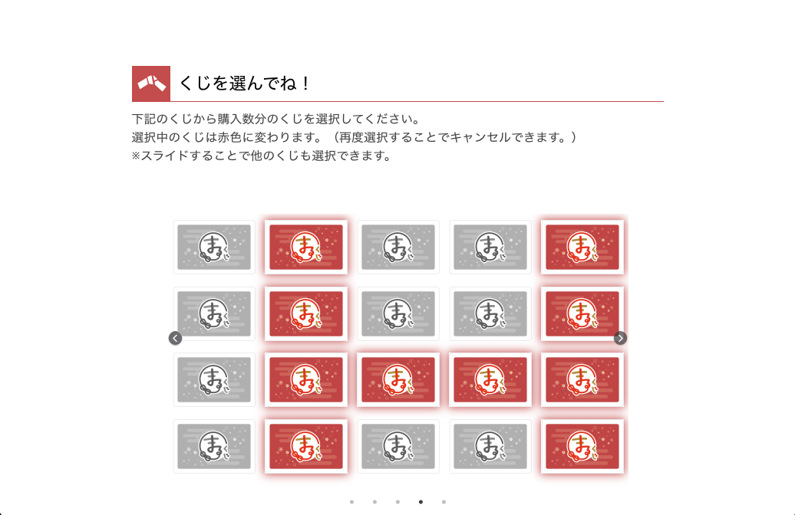
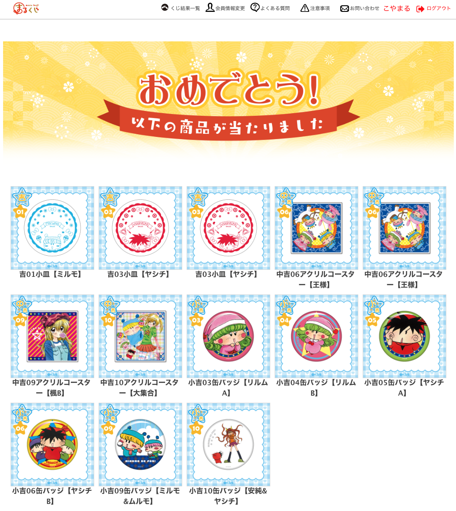
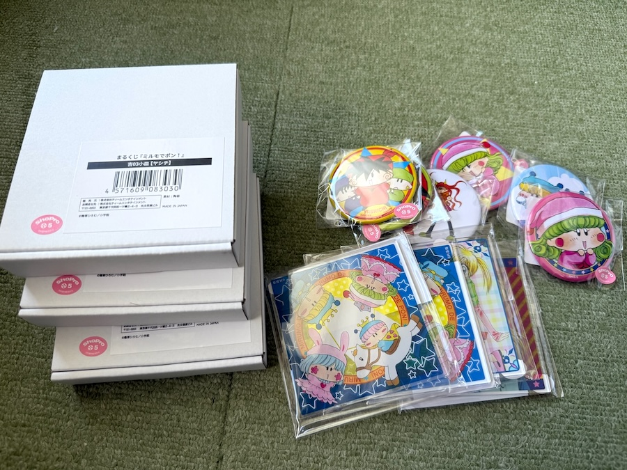
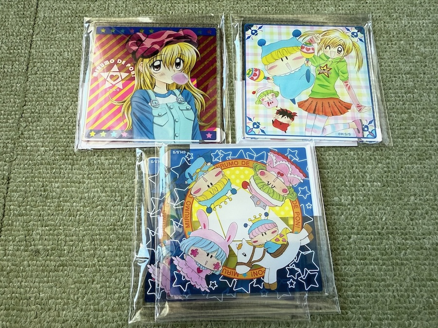
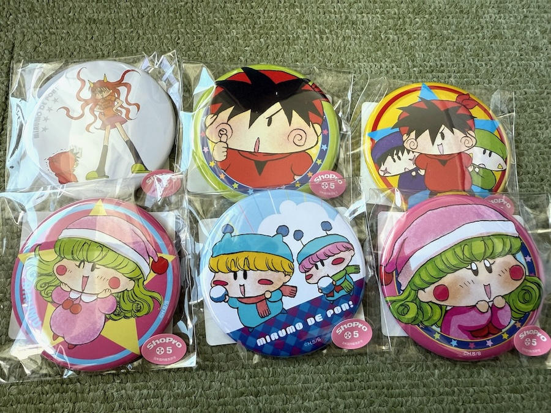

レポートが遅くなり申し訳ありません！
以前の記事で紹介しました『まるくじ ミルモでポン！』（販売期間：２０２４年３月２９日〜５月１２日）についてレポートいたします！
１回７７０円のミルモのまるくじ、私は３月３０日に約１万円分（１３回）挑戦してみました。
結果は以下の通りです(^◇^;)

まるくじのサイトで、購入枚数分のくじを自分で選びます（選んだくじが赤色に変わります）

当たった商品はこの通り！
マグカップどころか、選べる巾着ポーチも当たらず(T-T)
それに小皿とアクリルコースターもダブってしまってる・・＞＜
SNSではマグカップを見事当てた！という方を何人か見かけているので、私の運の無さが出てしまった形です。
当選した商品は７月頃に送られてきました（うろ覚え・・）
それでは、こやまるが今回ゲットしたグッズたちを以下に紹介しますね。

今回ゲットしたグッズたちです。
（超大吉）マグカップと（大吉）巾着ポーチがないので小物ばかりです(^◇^;)

まずは（吉）小皿です。
サイズは醤油皿サイズでしょーか・・茶色く汚れてしまいそうでお醤油を入れのは勇気がいるかも・・(^◇^;)

（中吉）のアクリルコースターです。
アクリルの透明な部分が透けるのがとてもおしゃれですね。
そしてドレスを着たパピィがかわいい〜〜。
前回の記事で注目していたパピィのコースターが当たってよかったです（ダブりましたが）

（小吉）の缶バッジです。
カバンにたくさん付けてにぎやかにするのが通な使い方と言えそうです。
皆さんはお目当てのグッズをゲットできましたでしょーか？
マグカップなど魅力あるグッズが多かったので、来年もまた第２弾のまるくじが登場することを願いたいです＞＜
(2024/10/13)